1.Introduzione
Scopo di questo documento è quello di illustrare, ad utenti selezionati, l’utilizzo del sistema VAM (release 3.3).
In particolare sarà presentata l’architettura e l’interfaccia del sistema, nonché saranno descritte la funzionalità al fine di permettere, all’utente stesso, l’utilizzo del sistema.
2.VAM
2.1Overview del sistema
Il sistema VAM deve essere in grado di fornire una serie di funzionalità, opportunamente categorizzate, ai diversi attori del sistema. Le funzionalità principali riguardano l’operato degli ambulatori veterinari a livello regionale. Ciò vuol dire che il sistema deve fornire tutti quei servizi per la gestione delle attività interne, esterne e di interconnessione.
2.2La lista delle funzionalità di VAM
Le funzionalità che il sistema VAM mette a disposizione sono elencate e classificate di seguito:
Attività cliniche interne dell’ambulatorio:
Gestione Accettazione
Animale esistente in Anagrafe (BDR);
Animale non precedentemente anagrafato (con relativo inserimento in modalità interattiva nella banca dati di riferimento)
Animale deceduto senza Identificativo;
Gestione trasferimenti;
Trasferimento in Ingresso
Trasferimento in Uscita
Approvazione CRIUV
Gestione cartella clinica;
Prelievi malattie infettive;
Leishmaniosi,
Ehrlichiosi,
Rickettsiosi,
Toxoplasmosi,
Rabbia
Animale deceduto, con aggiornamento automatico in BDR della comunicazione:
Verifica
Esame Necroscopico;
Indagini di laboratorio sugli animali deceduti;
Anamnesi;
Esame Obiettivo Generale e Particolare;
Esami interni(eco-cuore, eco-addome, ECG, …);
Ricovero;
La gestione delle Diagnosi (Lista diagnosi dei vari esami e la scheda autoptica in versione base);
Sezione chirurgica;
Terapie in degenza;
Diario clinico;
Trasferimenti;
Dimissioni, con aggiornamento automatico in BDR;
Gestione fascicolo sanitario
Altre attività interne:
Registro tumori
Gestione agenda
Gestione magazzino
Carico e scarico di Farmaci/Mangimi/Articoli Sanitari;
Attività di comunicazione con la BDR canina:
Gestione anagrafe;
Adozioni;
Trasferimenti (proprietà/residenza);
Smarrimento/Ritrovamento;
Comunicazione animale deceduto;
Richiesta rilascio passaporto;
Attività di interconnessione come:
ASL/BDR;
ASL/Regione;
ASL/IZSM;
ASL/ASL;
ASL/Università.
Le attività cliniche interne danno sempre vita allo stesso flusso, e cioè alle due fasi accettazione e cartella clinica.
E’ concesso riaprire la cartella clinica mediante il pulsante RIAPRI CC ma l’operazione può essere effettuata solo dall’utente che ha creato la cc.
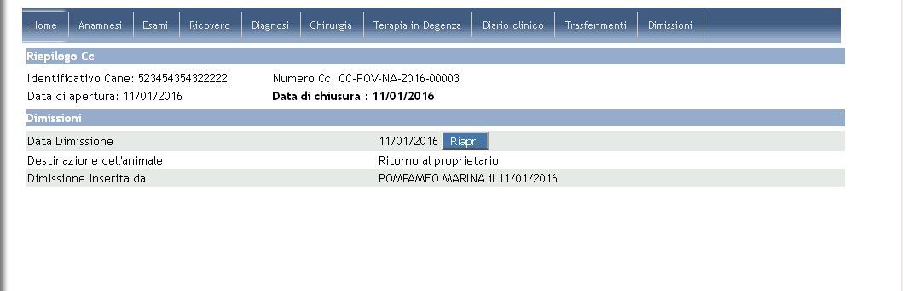
Lo stesso vincolo è presente per la riapertura della Cartella necroscopica.
2.3Gestione Accettazione
2.3.1 Inserimento accettazione
La maschera di VAM riguardo l’Accettazione si presenta come nella figura 1 sottostante.
Al fine di effettuare una nuova Accettazione è indispensabile possedere il numero identificativo dell’animale.
Inserendo l’identificativo dell’animale in questione, nel riquadro predisposto, il sistema verifica se esso è presente o meno in BDR, nel caso in cui l’identificativo animale inserito, è contenuto in BDR, appare la schermata che mostra all’utente i dati dell’animale ed a questo punto, è possibile proseguire con le altre operazioni possibili ovvero:
Nuova Accettazione
Accettazioni Precedenti
Modifica Anagrafica Animale

Figura 1 - gestione accettazione
Invece, nel caso in cui l’animale non è ancora presente in banca dati viene segnalato all’utente, ed a questo punto, il sistema VAM automaticamente comunica con BDR (canina, felina o sinantropi) e da la possibilità all’utente di anagrafare l’animale e successivamente di procedere con l’accettazione.
Naturalmente come precedentemente accennato, l’animale potrebbe non essere presente in banca dati ovvero non anagrafato e per questo il sistema reindirizza l’utente direttamente sulla BDR (canina, felina o sinantropi) al fine di effettuarne l’inserimento.
A questo punto come riportato in figura si sceglie una delle tre anagrafi su cui anagrafare l’animale e si procede con l’inserimento.

Figura 2 - animale non presente in banca dati

Figura 3 - inserimento dell'animale in BDR (canina)
Nel caso in cui invece, l’animale risulta presente in BDR, il sistema preleva tutti i dati dell’animale e li mostra come nella figura successiva.
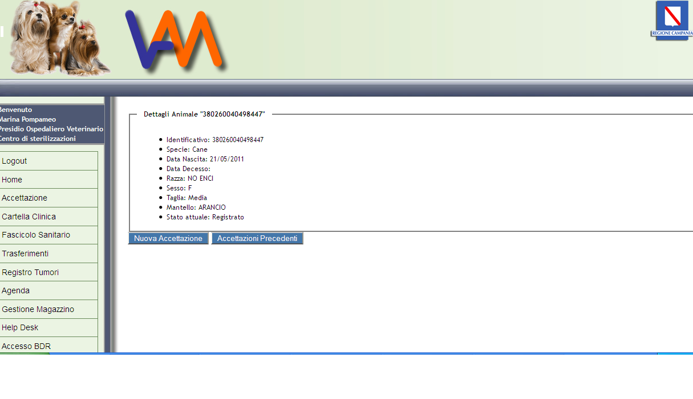
Figura 4 - Animale presente in BDR
Una volta che l’animale risulta correttamente anagrafato, è possibile proseguire con l’accettazione ed effettuare operazioni come Nuova Accettazione oppure visualizzare le Accettazioni Precedenti.
Nel caso di Nuova Accettazione, bisogna completare nelle sue parti il modulo predisposto per l’accettazione, da notare che esso risulta già precompilato per la parte relativa all’animale ed al proprietario, come mostrato nelle figure 5 e 6 sottostanti.
Al momento dell’accettazione, lasciando a parte le sezioni precompilate, relative ai dati del cane e del proprietario, sono presenti altre aree da compilare, la prima è relativa ai “Dati Richiedente” è presente una combo con una lista del Tipo Richiedente:
Privato (nel caso in cui a richiedere l’accettazione è un privato che può coincidere col detentore)
Personale interno (nel caso in cui a richiedere l’accettazione si tratta di persone appartenente alla struttura)
Personale ASL (nel caso in cui a richiedere l’accettazione si tratta di persone appartenente all’ASL)
Associazione (nel caso in cui a richiedere l’accettazione si tratta di associazione/canile)
Altro (nel caso in cui a richiedere l’accettazione si tratta di qualcuno che non rientra nelle altre voci)
Forza Pubblica (Questura, Polizia, Carabinieri, Vigili del Fuoco, Pubblica sicurezza, Polizia Municipale e Corpo Forestale)
Successivamente si passa alla compilazione dell’area Motivazioni/Operazioni Richieste, in cui bisogna spuntare delle motivazioni o delle operazioni al fine di giustificare l’accettazione.
Tra le sottoaree sono presenti:
Anagrafi Regionali
Richieste Varie
Richiesta Prelievi – Malattie Infettive
Approfondimento Diagnostico Medicina
Alta specialità chirurgica
Diagnostica specialistica strumentale
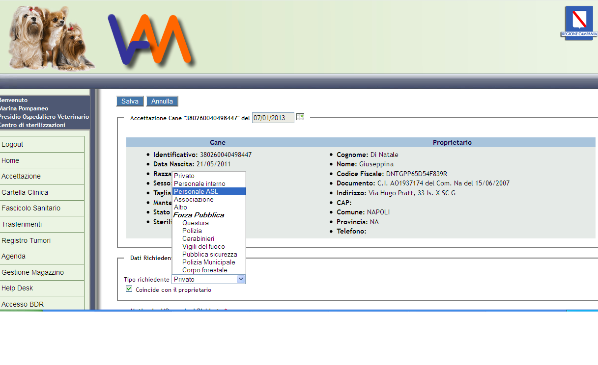
Figura 5 - Gestione accettazione (1)
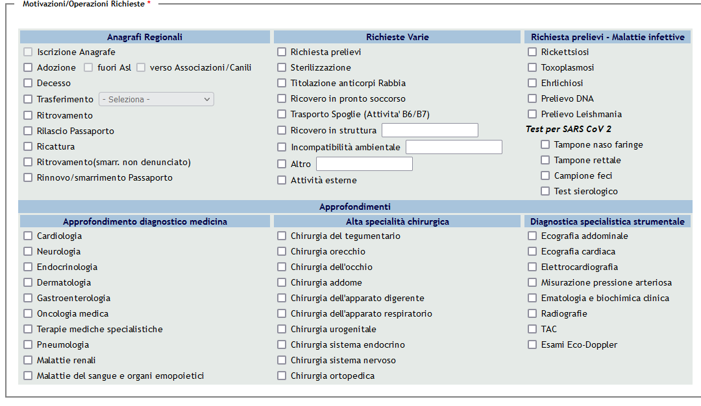
Figura 6 - Gestione accettazione (2)
Nella figura 6 è mostrato il dettaglio Motivazioni/Operazioni Richieste con le varie opzioni da poter scegliere al momento dell’accettazione.
La fattibilità delle Motivazioni/Operazioni Richieste è vincolata da alcune condizioni che vengono verificate all'atto del salvataggio: se non sono soddisfatte le condizioni il sistema blocca l'inserimento, di seguito una tabella riassuntiva dove ad ogni condizione posta sull'animale viene indicato se l'operazione può essere scelta: reg. in bdr significa che l'operazione richiede una corrispondente registrazione in bdr.
Motivazione da deceduto da vivo fuori asl fuori asl e deceduto reg. in bdr
|
Adozione |
NO |
SI |
NO |
SI |
SI |
|
Decesso |
NO |
SI |
SI |
SI |
SI |
|
Trasferimento NO |
SI |
NO |
NO |
SI |
|
|
Ritrovamento NO |
SI |
SI |
NO |
SI |
|
|
Rilascio Passaporto NO |
SI |
SI |
SI |
SI |
|
|
Richiesta prelievi |
NO |
SI |
NO |
NO |
NO |
|
Sterilizzazione |
NO |
SI |
SI |
SI |
NO |
|
Titolazione anticorpi Rabbia |
SI |
SI |
SI |
SI |
NO |
|
Ricovero in pronto soccorso |
NO |
SI |
SI |
SI |
NO |
|
Esame Necroscopico |
SI |
NO |
NO |
SI |
NO |
|
Trasporto Spoglie (Attivita' B6/B7) |
SI |
NO |
SI |
NO |
NO |
|
Cardiologia |
NO |
SI |
NO |
NO |
NO |
|
Neurologia |
NO |
SI |
NO |
NO |
NO |
|
Endocrinologia |
NO |
SI |
NO |
NO |
NO |
|
Dermatologia |
NO |
SI |
NO |
NO |
NO |
|
Gastroenterologia |
NO |
SI |
NO |
NO |
NO |
|
Oncologia medica |
NO |
SI |
NO |
NO |
NO |
|
Terapie mediche specialistiche |
NO |
SI |
NO |
NO |
NO |
|
Pneumologia |
NO |
SI |
NO |
NO |
NO |
|
Malattie renali |
NO |
SI |
NO |
NO |
NO |
|
Malattie del sangue e organi emopoietici |
NO |
SI |
NO |
NO |
NO |
|
Rickettsiosi |
NO |
SI |
NO |
NO |
NO |
|
Toxoplasmosi |
NO |
SI |
NO |
NO |
NO |
|
Ehrlichiosi |
NO |
SI |
NO |
NO |
NO |
|
Chirurgia del tegumentario |
NO |
SI |
NO |
NO |
NO |
|
Chirurgia orecchio |
NO |
SI |
NO |
NO |
NO |
|
Chirurgia dell'occhio |
NO |
SI |
NO |
NO |
NO |
|
Chirurgia addome |
NO |
SI |
NO |
NO |
NO |
|
Chirurgia dell'apparato digerente |
NO |
SI |
NO |
NO |
NO |
|
Chirurgia dell'apparato respiratorio |
NO |
SI |
NO |
NO |
NO |
|
Chirurgia urogenitale |
NO |
SI |
NO |
NO |
NO |
|
Chirurgia sistema endocrino |
NO |
SI |
NO |
NO |
NO |
|
Chirurgia sistema nervoso |
NO |
SI |
NO |
NO |
NO |
|
Chirurgia ortopedica |
NO |
SI |
NO |
NO |
NO |
|
Ecografia addominale |
NO |
SI |
NO |
NO |
NO |
|
Ecografia cardiaca |
NO |
SI |
NO |
NO |
NO |
|
Elettrocardiografia |
NO |
SI |
NO |
NO |
NO |
|
Misurazione pressione arteriosa |
NO |
SI |
NO |
NO |
NO |
|
Ematologia e biochimica clinica |
NO |
SI |
NO |
NO |
NO |
|
Radiografie |
SI |
SI |
NO |
NO |
NO |
|
TAC |
SI |
SI |
NO |
NO |
NO |
|
Esami Eco-Doppler |
NO |
SI |
NO |
NO |
NO |
|
Ricovero in struttura |
NO |
SI |
SI |
SI |
NO |
|
Incompatibilità ambientale |
NO |
SI |
SI |
SI |
NO |
|
Altro |
SI |
SI |
SI |
SI |
NO |
|
Ricattura |
NO |
SI |
SI |
SI |
SI |
|
Ritrovamento(smarr. non denunciato) |
SI |
SI |
SI |
NO |
|
|
Attività esterne |
SI |
SI |
SI |
SI |
NO |
|
Terapia in Degenza |
NO |
||||
|
Reimmissione |
NO |
NO |
NO |
NO |
NO |
|
Prelievo DNA |
NO |
SI |
SI |
SI |
SI |
|
Rinnovo/smarrimento Passaporto |
NO |
SI |
SI |
SI |
SI |
|
Trasferimento a canile |
NO |
NO |
NO |
NO |
NO |
|
Ritorno a proprietario |
NO |
NO |
NO |
NO |
NO |
|
Prelievo Leishmania |
SI |
SI |
SI |
SI |
SI |
|
Restituzione a canile origine |
NO |
SI |
NO |
NO |
NO |

Figura 7 - Dettaglio dell'accettazione
La figura 7, mostra il Dettaglio relativo alla scheda dell’accettazione, tale riepilogo può essere stampato, modificato o eliminato.
Una volta terminata la procedura dell’Accettazione, le operazioni possibili sono:
STAMPA
ELIMINA
MODIFICA
APRI CARTELLA CLINICA

Cliccando su elimina si apre una pop up che avverte:
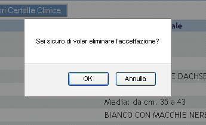
E’ possibile eliminare/modificare un accettazione nei casi in cui non è aperta alcuna Cartella Clinica e nel caso in cui l’accettazione che si intende eliminare non comprende operazioni che interagiscono con la BDU. Ad esempio se l’accettazione possiede come motivazione “prelievo DNA” non sarà possibile eliminarla per evitare un disallineamento dati tra VAM e BDU.
2.3.2 Registrazione trasporto spoglie
Sul dettaglio dell'accettazione è possibile inserire la registrazione di trasporto spoglie cliccando sul pulsante “Inserisci registrazione trasporto spoglie” come mostrato in figura qui sotto.
E' possibile inserire la registrazione quando:
in accettazione è stata selezionata la motivazione 'Esame Necroscopico' o 'Registrazione Trasporto Spoglie' o se sulla cc associata all'accettazione è stata inserita la richiesta di necroscopia;
la registrazione non è stata già inserita;
non esistono richieste di necroscopie esterne sulla cc associata (in quel caso la registrazione è a carico del laboratorio di destinazione).
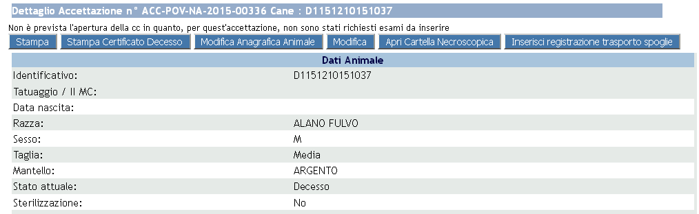
Si apre una scheda nel quale inserire i dati relativi alla registrazione. L'unico dato obbligatorio è la data.
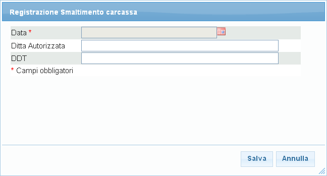
Dopo l'inserimento, i dati non sono più modificabili ma è possibile solo visualizzarli cliccando sul pulsante 'Vedi Registrazione Trasporto Spoglie' che mostra una popup come in figura.

Entrando sempre nel modulo Accettazione e cliccando successivamente sul bottone:
si apre la schermata di VAM come illustrato in figura 2.
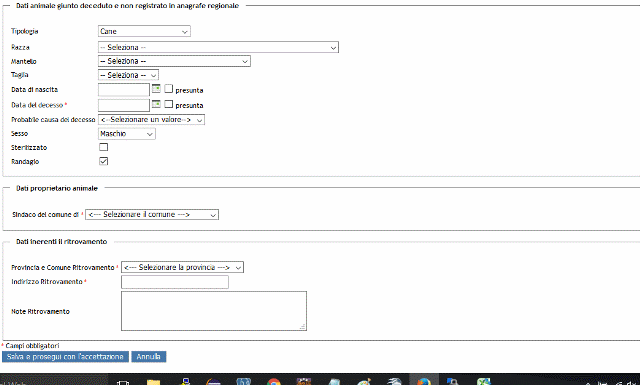
Figura 8 – Inserimento animale deceduto senza Identificativo
N.B. Da tenere presente che, essendo la comunicazione effettuata in connessione sicura, il sistema potrebbe richiedere di accettare un certificato di sicurezza. Tranquillamente si può accettare.
I flag 'Randagio' e 'Sterilizzato' sono disponibili solo per cani e gatti. Se l'animale non è randagio, il riquadro 'Dati Proprietario Animale', anziché riportare il menu a tendina dove scegliere il sindaco, viene visualizzato come in figura:
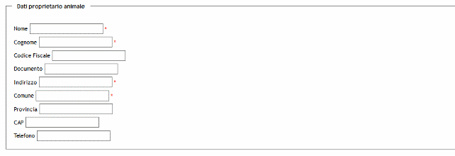
Data decesso, proprietario e dati sul ritrovamento sono obbligatori. Cliccare su 'Salva e prosegui con accettazione' per salvare l'animale e inserire l'accettazione relativa.
2.3.2 Accettazione Multipla
Accettazione multipla è una funzionalità che consenta l'inserimento di accettazioni con motivazione "Iscrizione in Anagrafe" relative a un numero di microchips superiore a uno in un'unica fase.
Nella home page di VAM, in particolare nel menù è stato aggiunto "Accettazione multipla". L’utente, cliccando su “Accettazione multipla” si aprirà una schermata in cui inserire la lista dei microchips da anagrafare, a questo punto cliccando sul pulsante “Prosegui”, può procedere l'inserimento delle anagrafiche in BDR singolarmente. Il sistema, infatti, aprirà la BDR in modalità interattiva consentendo l'anagrafe del primo microchip. Cliccando su 'Operazione completata' lo step di inserimento anagrafica sarà ripetuto per il secondo microchip e così via fino all'ultimo. A partire dal secondo mc la maschera sarà prepopolata con i dati inseriti in precedenza. Il sistema creerà un numero di accettazioni pari al numero di microchips anagrafati, tuttavia sarà possibile la stampa del documento finale relativo all'anagrafe complessiva dei microchips. Nella lista delle accettazioni della clinica, saranno presenti tante accettazioni quanti sono i microchip anagrafati.
Di seguito vengono elencati gli step da seguire secondo quanto detto in precedenza:
1 - L'utente accede al sistema VAM e nel menù laterale trova la sezione 'Accettazione Multipla';
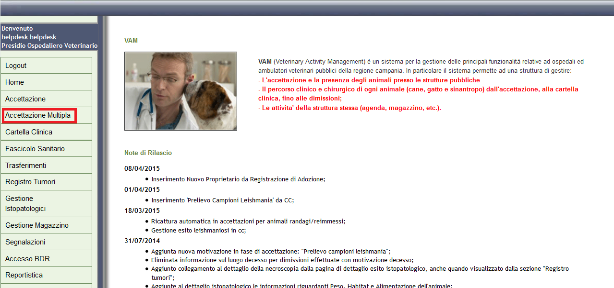
2 – Nella maschera seguente, l'utente inserisce la lista dei
microchip da anagrafare, se sono più di due, utilizzando il
bottone
 può inserirne N.
può inserirne N.
Dopo aver scritto tutto l’elenco di microchip da anagrafare, cliccando su PROSEGUI, può cominciare l’inserimento in BDR degli animali, seguendo l’ordine di come sono stati scritti.
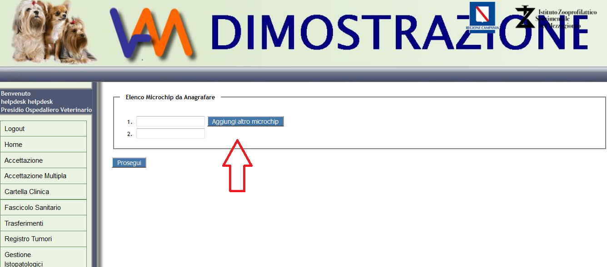
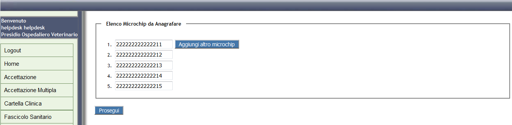
3 – Dopo cliccato su PROSEGUI, il sistema si collega alla BDR e si può procedere ad inserire i dati relativi al primo MC, una volta terminato l’inserimento del primo MC in anagrafe si procede con il successivo, cliccando sul tasto 'Prosegui con il mc successivo';
Il sistema evidenzia con il colore verde i microchip anagrafati, con il colore giallo il microchip che si sta anagrafando, in rosso quelli ancora da anagrafare, come riportato in figura seguente:

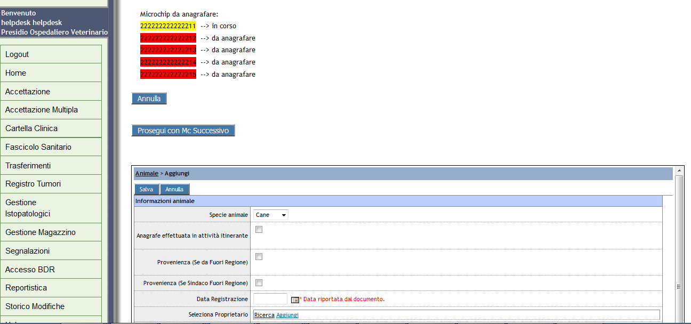
4 – Per i microchip successivi al primo, il sistema precompila i campi prendendoli dal primo mc, a questo punto l’utente può scegliere di modificarne alcuni e successivamente sempre attraverso il tasto 'Prosegui con il mc successivo' può proseguire con le operazioni successive;
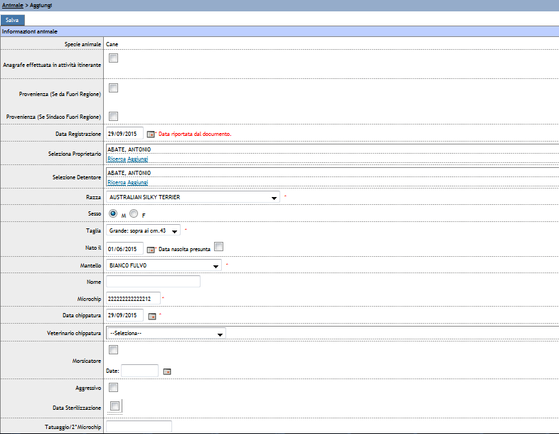
5 - Quando l'utente arriva ad anagrafare l'ultimo MC il sistema mostrerà il pulsante ;

6 – Dopo aver anagrafato tutti gli animali, il sistema mostrerà N dettagli di animali, per quanti sono gli animali anagrafati ed a questo punto si potrà procedere ad inserire l’accettazione multipla, inserendo i Dati del Richiedente, come indicato nelle figura seguenti:


Sul dettaglio delle accettazioni create con questa particolare
modalità ci sarà la possibilità di effettuare
una stampa cumulativa, di tutte le accettazioni coinvolte, tramite
pulsante
 .
.

Una volta create, tutte le accettazioni seguiranno la storia clinica dell'animale coinvolto (cc, necroscopie, esami vari, …) in maniera indipendente dalle altre, in quanto comunque il sistema genera N accettazioni indipendenti l’una dall’altra, per cui nella lista di tutte le accettazioni della clinica, l’utente le vede come tante singole accettazioni.
Ad ogni modo non si perde la storia sul fatto che si trattano di
accettazioni multiple tant’è che nel dettaglio di
ognuno di queste singole accettazioni è presente il bottone
 oltre che la possibilità di stamparle singolarmente, come
riportato nella figura seguente.
oltre che la possibilità di stamparle singolarmente, come
riportato nella figura seguente.

2.4La cartella clinica
L'apertura della cartella clinica avviene tramite apposito pulsante posto nel dettaglio dell'accettazione denominato 'Apri Cartella Clinica' se animale vivo, altrimenti 'Apri Cartella Necroscopica'.
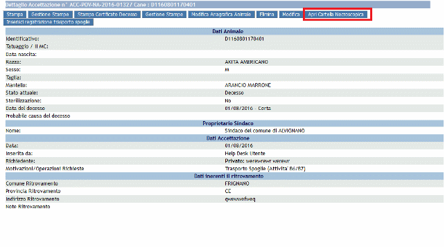
Il pulsante 'Apri Cartella Necroscopica' viene mostrato se non c'è ancora una cc associata all'accettazione e se tutte le motivazioni di apertura accettazione che necessitano di aggiornamento in bdu sono state effettuate.
Il pulsante 'Apri Cartella Clinica' viene mostrato se non c'è ancora una cc associata all'accettazione, se tutte le motivazioni di apertura accettazione che necessitano di aggiornamento in bdu sono state effettuate e se è stata selezionata una motivazione in accettazione che implica l'apertura di cartella clinica per inserire gli esami (in pratica tutte le operazioni diverse da quelle presenti nel riquadro 'Anagrafi Regionali' e da 'Registrazione Trasporto Spoglie').
In caso di impossibilità di apertura cc viene mostrato il messaggio seguente: 'Non è prevista l'apertura della cc in quanto, per quest'accettazione, non sono stati richiesti esami da inserire'.
Nel caso esistesse per l'animale un'accettazione piu recente, la cc non può essere aperta: in questi casi l'apertura della cc è disponibile solo per gli utenti 'Referente Asl' al fine di consentire il recupero di accettazioni pregresse.
Contestualmente all'apertura della cc viene anche aperto un nuovo fascicolo sanitario per l'animale.
La cartella clinica si presente come segue.
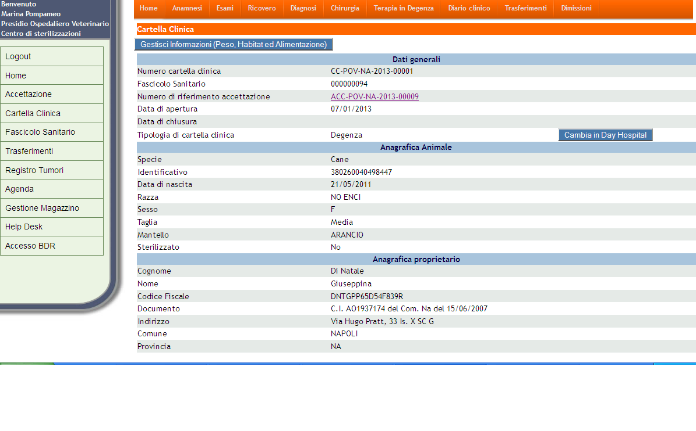
Figura 2 - Home di una cartella clinica
Come si visualizza nella figura 9 soprastante, nella home della cartella clinica è possibile modificare delle informazioni come Peso, Habitat ed Alimentazione, inoltre è possibile gestire varie fasi come:
Anamnesi
Esami
Ricovero
Diagnosi
Chirurgia
Terapia in degenza
Diario clinico
Trasferimenti
Dimissioni
2.4.1Anamnesi
La fase di Anamnesi è la raccolta di tutte quelle informazioni, notizie e informazioni che possono indirizzare verso una corretta diagnosi, questa fase è stata gestita come Anamnesi Recente ed Anamnesi Remota.
Cliccando su 'Anamnesi' –> 'Anamnesi Recente' si visualizza l'informazione precedentemente inserita, se presente, altrimenti i campi Tipo e Descrizione compaiono non valorizzati. Selezionare una tipologia e una descrizione (nel caso di tipo 'Conosciuta') e cliccare su 'Inserisci/Modifica'.
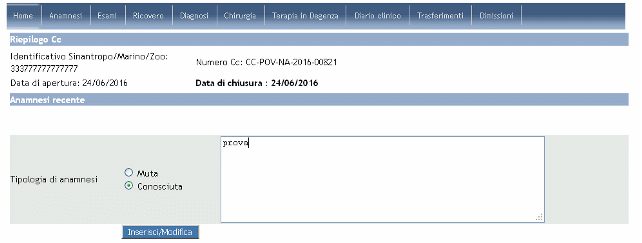
Figura 3 - anamnesi recente
Per visualizzare l'anamnesi remota cliccare su 'Anamnesi' → 'Anamnesi Remota'. Si presenta la schermata come in figura seguente.
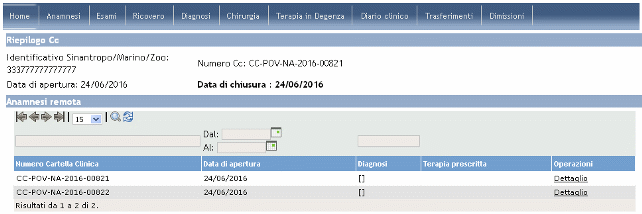
Figura 11 – anamnesi remota
Nella figura sopra è mostrata l’anamnesi remota, attraverso la lista delle precedenti cartelle cliniche.
2.4.2Esami
Per l’inserimento degli Esami sono state divisi in varie tipologie ovvero Esame Obiettivo, Esami Interni ed Esami Esterni.
L’esame Obiettivo si distingue in:
Generale: ambito costituzionale, stato nutrizione, facies, apparato scheletrico e muscolare, sistema linfoghiandolare (figura 12)
Particolare: a carico delle varie regioni del corpo, apparati e sistemi organici (figura 13)
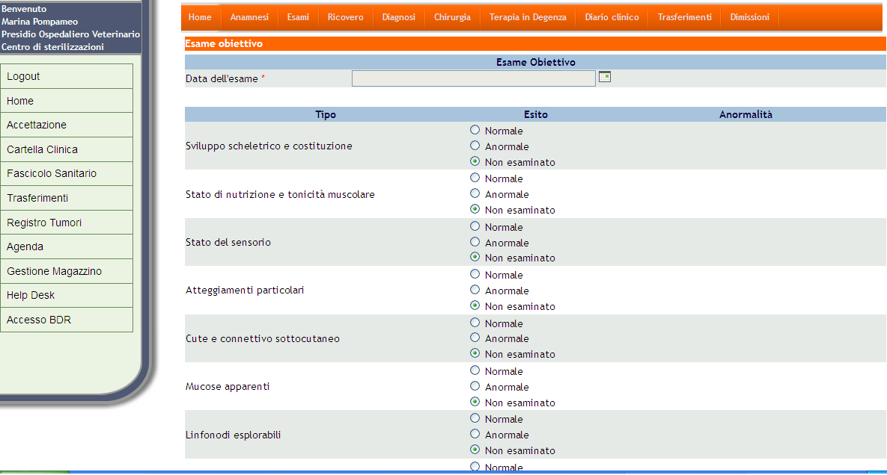
Figura 12 – esame obiettivo generale
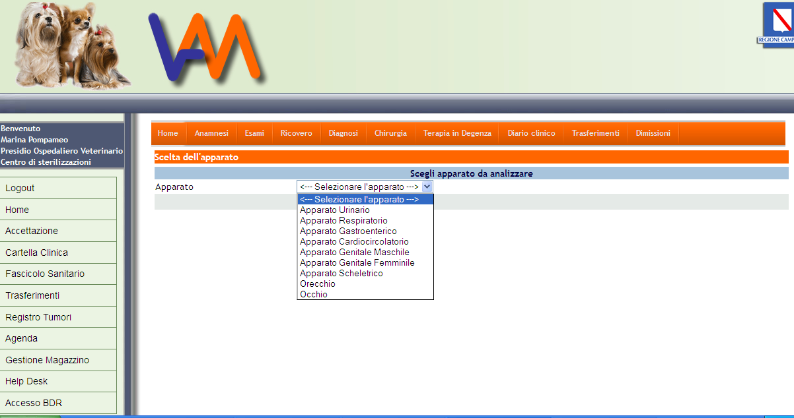
Figura 13 – esame obiettivo particolare
Esami Interni si dividono in:
Diagnostica per immagini: Eco-Addome, Eco-Cuore (figura 14);
Sangue: Ematochimici, Elettroliti, Emogas arterioso, Emogas venoso, Enzimatici, Elettroforesi, Acidi Biliari (figura 15);
Urine: Esame Fisico/Chimico, Sedimento urinario (figura 16);
Coprologico (figura 17);
ECG: Misurazioni effettuate in II derivazione (50mm/sec), dignosi (figura 18);
Istopatologico (figura 19)
Citologico (figura 20)
Figura14 – Diagnostica per immagini
Diagnostica per immagini
Per accedere al modulo 'Diagnostica per immagini' cliccare sul cavaliere 'Esami', 'Esami interni' e poi 'Diagnostica per Esami' presente nella cartella clinica. Si apre una pagine in cui selezionare il tipo di esame da gestire, cliccare su una delle voci disponibili per andare alla gestione del relativo esame.
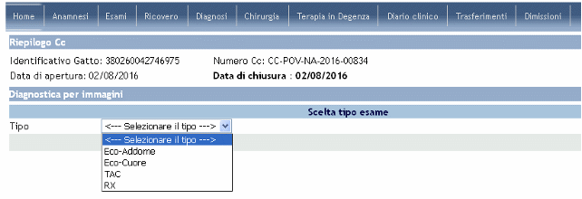
Eco-Addome
Entrando nella gestione degli esami 'Eco-Addome' viene mostrata la pagina con la lista degli esami come mostrato in figura.
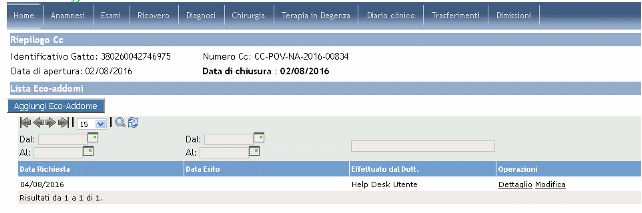
Cliccando sul pulsante 'Aggiungi Eco-Addome' è possibile inserire un nuovo esame compilando il modulo seguente
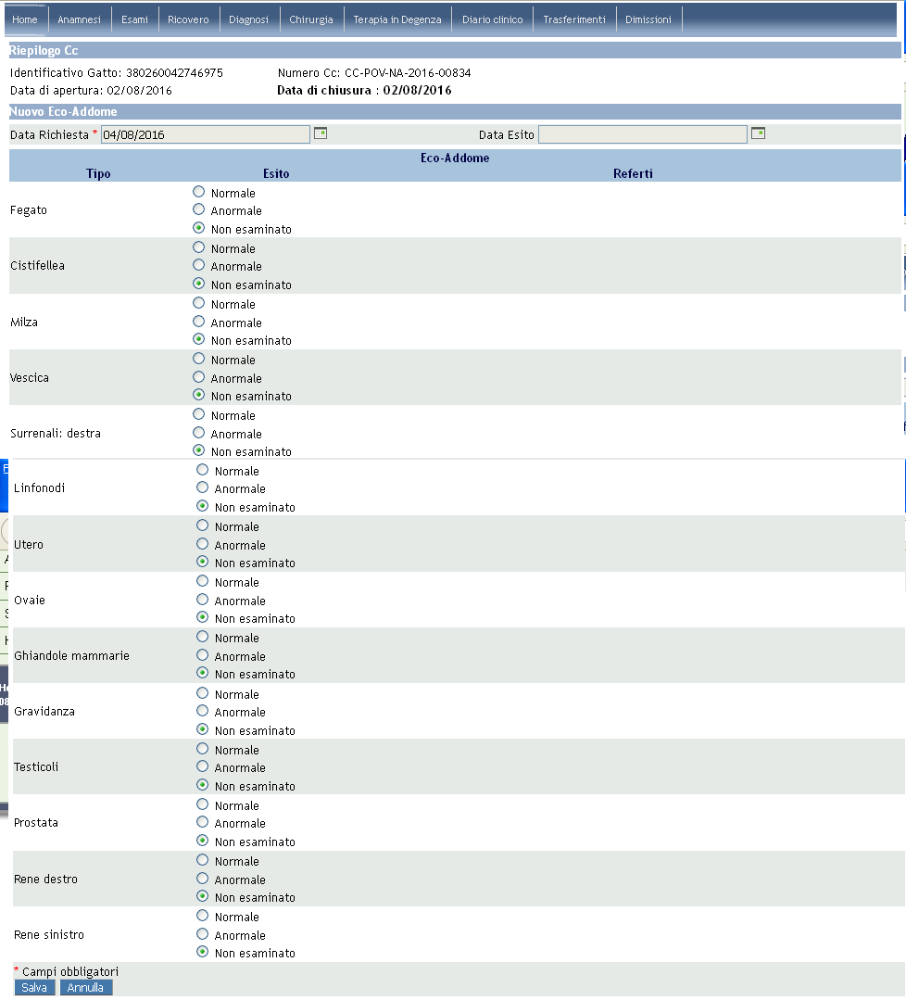
Cliccando sui tasti Modifica e Dettaglio posti nella lista si può, rispettivamente, modificare o visualizzare il dato inserito precedentemente.
Eco-Cuore
Entrando nella gestione degli esami 'Eco-Cuore' viene mostrata la pagina con la lista degli esami come mostrato in figura.
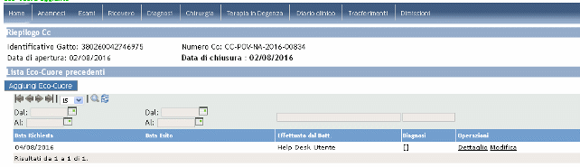
Agendo sui pulsante Aggiungi Eco-Cuore, Dettaglio e Modifica si possono inserire, visualizzare e modificare gli esami.
Tac
Entrando nella gestione degli esami 'Tac' viene mostrata la pagina con la lista degli esami come mostrato in figura.

Agendo sui pulsante Aggiungi TAC, Dettaglio e Modifica si possono inserire, visualizzare e modificare gli esami.
Rx
Entrando nella gestione degli esami 'Rx' viene mostrata la pagina con la lista degli esami come mostrato in figura.
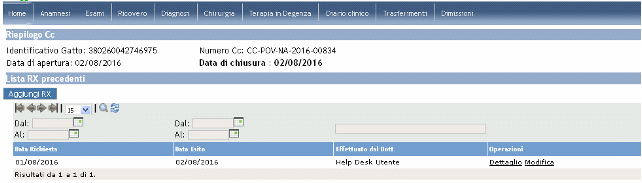
Agendo sui pulsante Aggiungi Rx, Dettaglio e Modifica si possono inserire, visualizzare e modificare gli esami.
Figura 15 – Nuovo esame del sangue

Figura 16 – Nuovo esame delle urine
Esame Coprologico
Entrando nella gestione degli esami 'Esame Coprologici' cliccando su 'Esami' → 'Esami Interni' → 'Coprologico' viene mostrata la pagina con la lista degli esami come mostrato in figura.
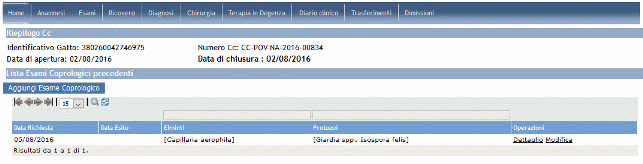
Cliccando sul pulsante 'Aggiungi Esame Coprologico' è possibile inserire un nuovo esame compilando il modulo seguente

Cliccando sui tasti Modifica e Dettaglio posti nella lista si può, rispettivamente, modificare o visualizzare il dato inserito precedentemente.
Figura 17 – Esame Coprologico

Figura 18 – ECG
2.4.2.1Esame necroscopico
Accedendo al cavaliere 'Esame Necroscopico' della cartella necroscopica si possono inserire e visualizzare le richieste di esami. La richiesta si inserisce premendo il pulsante ‘Aggiungi Richiesta’ e compilando il modulo (vedi figure seguenti). Il pulsante 'Aggiungi Richiesta' è visibile fin quando non viene inserita effettivamente la richiesta o non è stato selezionato 'Esame Necroscopico non effettuabile' (per i dettagli si rimanda piu avanti).
F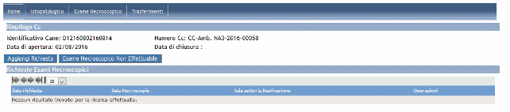
igura 19 – Richiesta Esame Necroscopico(utente Asl)
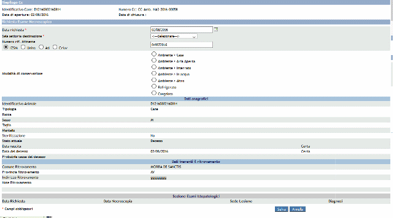
Il numero riferimento mittente viene impostato automaticamente quando si clicca sul tipo di Numero rif. Mittente (IZSM | ASL | CRIUV | Unina) ed è formato nel seguente modo: numero progressivo di 3 cifre + tipo_numero_rif_mittente + anno corrente. Inoltre è obbligatorio specificare la data(non precedente alla data del decesso) e sala settoria.
Se è stato scelto un laboratorio esterno (izsm / università) viene generato un trasferimento verso il suddetto laboratorio (per le specifiche si rimanda al paragrafo 'Trasferimenti'). Nel menu a tendina 'sala settoria' venegono evidenziati quali sono i laboratori esterni e quali quelli interni.
La cc originale viene chiusa in seguito al trasferimento per necroscopia e lasciata aperta per la sola parte dell’istopatologico.
Dopo l'inserimento, la richiesta sarà visibile appena si accede al modulo 'Esame Necroscopico' come si vede in figura.
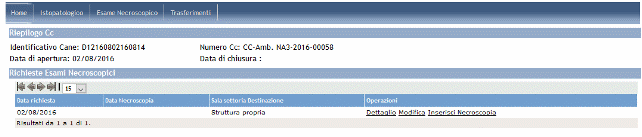
Sulla riga corrispondente alla richiesta è possibile visualizzare il dettaglio, modificare la richiesta o inserire la necroscopia.
Nel dettaglio, come si vede nella figura seguente, vi è la possibilità di effettuare la stampa della richiesta tramite pulsante 'Stampa Richiesta'. Inoltre, oltre ai dati della richiesta, si possono visualizzare i dettagli della necroscopia e le immagini allegate appena saranno inserite.
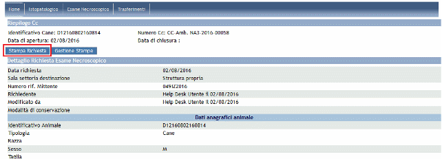
Il tasto 'Modifica' consente la modifica della richiesta e può essere effettuata solo quando:
utente loggato appartenenete alla stessa clinica dell'utente che ha inserito la richiesta o utente Help Desk;
non è stata ancora inserita la necroscopia o, nel caso di sala settoria esterna, non è stato ancora accettato il trasferimento dal laboratorio di destinazione.
In fase di modifica può essere variata la sala settoria precedentemente inserita: se era esterna, il trasferimento che era stato generato viene annullato ed eventualmente (se la sala settoria è sempre di tipo esterno) inserito il nuovo trasferimento verso la nuova destinazione.
Il tasto 'Inserisci Necroscopia', utilizzato per inserire la necroscopia utilizzando il modulo seguente, viene visualizzato solo collegandosi con utente appartenente alla sala settoria specificata in richiesta o con utente Help Desk.
Nella pagina di inserimento necroscopia sono presenti due sezioni, una con i dettagli della richiesta non modificabile ed un'altra con i dati della necrosocpia da compilare. Data necroscopia, operatori e quadro patologico prevalente sono i campi obbligatori.
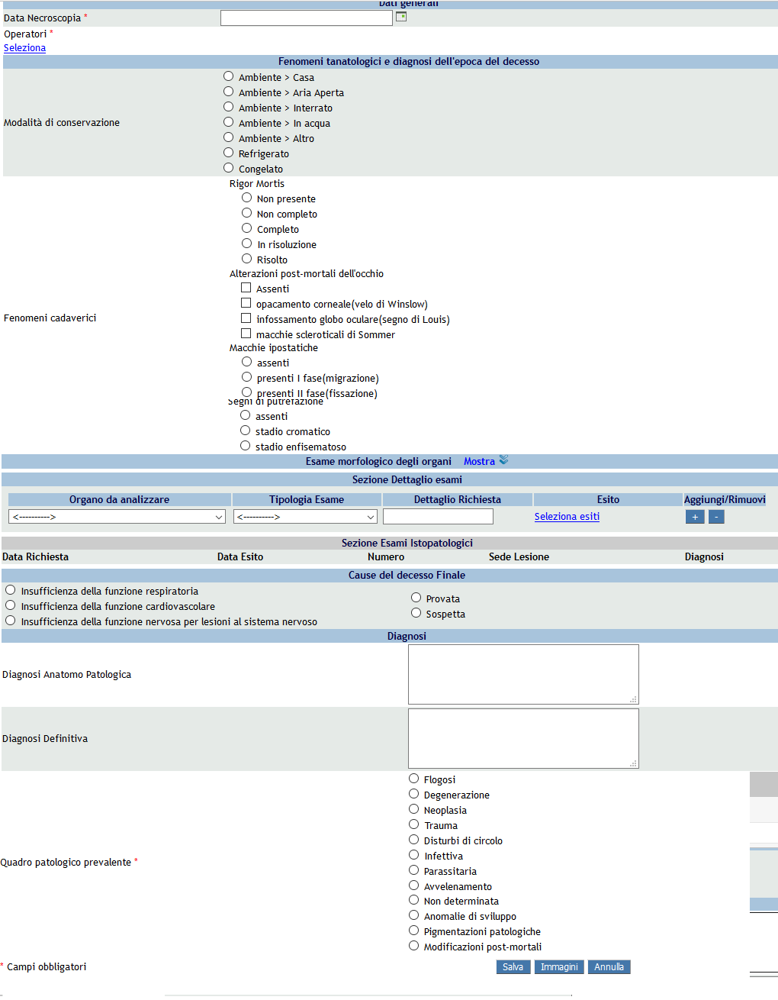
Contestualmente all'inserimento della necroscopia è possibile caricare le immagini cliccando il pulsante 'Immagini'.
Se nella necroscopia è stata specificata la sezione dettaglio esami e l'utente loggato appartiene alla clinica che ha inserito la necroscopia, nel dettaglio viene visualizzato il pulsante 'Stampa Verbale Prelievo' per effettuare la stampa del verbale che accompagna i campioni prelevati.
E’ possibile inoltre dichiarare non effettuabile la necroscopia cliccando sul pulsante “esame necroscopico non effettuabile”. Il tasto è disponibile fin quando la cc è aperta e non è stata già inserita la richiesta. Come mostrato in figura:
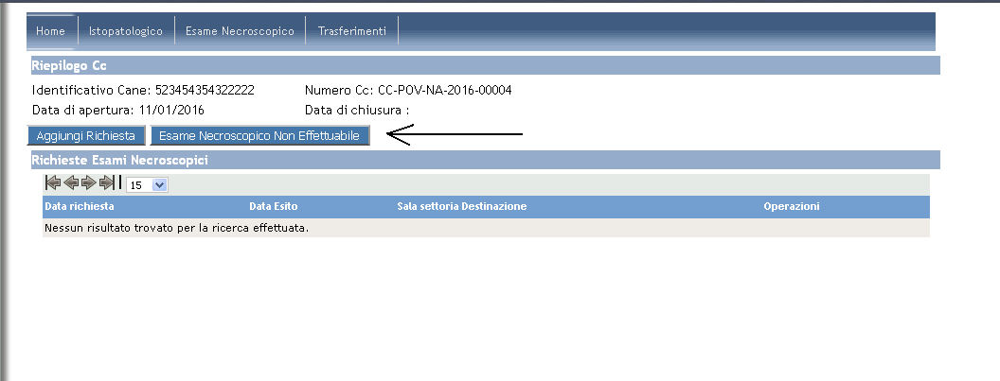
Una volta che la necroscopia è stata dichiarata come non effettuabile si ha la possibiltà di sbloccare lo stato e renderla nuovamente effettuabile clicando su “rendi effettuabile.”

2.4.2.2Esame istopatologico
Le richieste di esami per le Asl sono gestite all’interno della sezione ‘Istopatologico’ della cartella necroscopica.
Il sistema mostra l’elenco delle richieste inserite nella cc.
Il tasto 'Stampa' presente nella pagina stampa in un unico documento le richieste di istopatologici presenti nella cc.
Per inserire una nuova richiesta cliccare sul tasto ‘Aggiungi Richiesta’ come mostrato in figura.
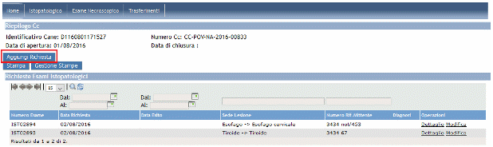
Il modulo di inserimento si presenta come in figura. Inserire obbligatoriamente data richiesta e sede lesione e sottospecifica e specificare gli eventuali altri dati e cliccare 'Salva' per effettuare l'inserimento. Qualora vengano richiesti uno o più esami istopatologici insieme alla necroscopia, il “Numero riferimento mittente” inserito la prima volta viene riportato uguale nelle maschere successive. In seguito all’inserimento il sistema assegna un codice identificativo che servirà agli utenti izsm o università per inserire l’esito.
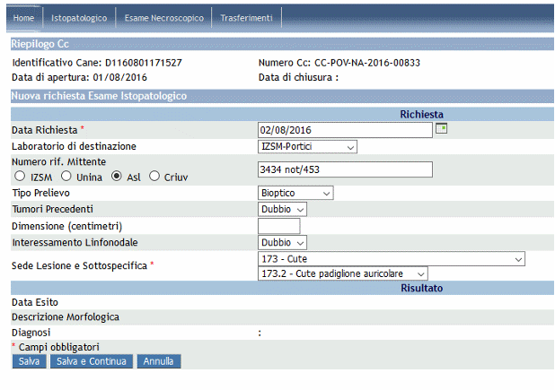
Se si clicca sul pulsante 'Salva e continua' è possibile inserire l'istopatologico e farsi posizionare automaticamente in un'ulteriore pagina di inserimento dove tutti i dati sono già precompilati e bloccati e l'unico dato da modificare è la sede lesione da esaminare (vedi figura). Questo permette di velocizzare l'inserimento di piu richieste di esami dove cambia solo l'organo da analizzare.
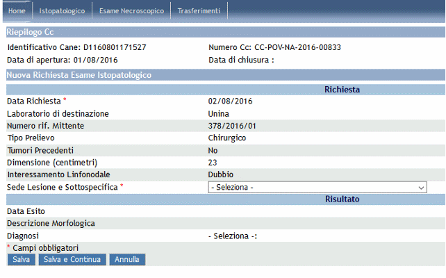
Nella pagina principale della sezione ‘Esame istopatologico’ sono presenti due link accanto ad ogni richiesta:
Dettaglio: per utente asl apre la pagina in cui sono riepilogati tutti i dati inseriti e l'eventuale esito inserito da izsm/unina mentre per utente izsm/unina, apre la pagina di inserimento esito (la parte di richiesta è in sola lettura mentre quella di esito è modificabile);
Modifica: visibile solo ad utente asl, apre la pagina di modifica richiesta (la parte di richiesta è modificabile mentre quella di esito è in sola lettura);
Nel dettaglio dell'esame, che si presenta come in figura, è possibile stampare la richiesta cliccando sul pulsante 'Stampa'.
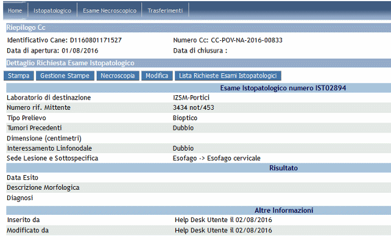
La pagina di inserimento esito per utente izsm/unina si presenta come in figura.
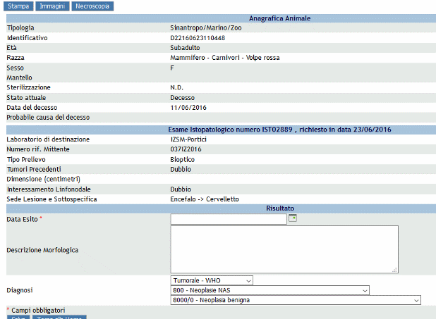
Cliccando sul pulsante 'Immagini' si apre una popup dove poter selezionare le immagini da allegare al risultato. Le stesse saranno visibili e non modificabili dall'asl tramite apposito pulsante 'Immagini' posto nella propria pagina di dettaglio esame.
Se si seleziona come Diagnosi 'Non tumorale' il sistema mostra un'area di testa dove poter inserire delle note (vedi figura).
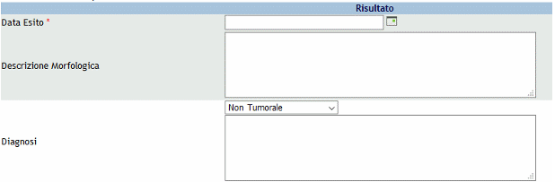
Se si seleziona come Diagnosi 'Tumorale - WHO' il sistema mostra un menù a tendina dove poter specificare il tumore diagnosticato (vedi figura).
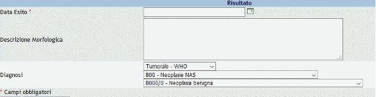
Dal cavaliere esterno “Gestione istopatologici” è possibile visualizzare l’elenco di tutti gli esami inviati (nel caso di utente asl) o ricevuti (nel caso di utente izsm o unina a seconda del laboratorio di destinazione selzionato). Nella colonna diagnosi viene descritto l’esito dell’esame evidenziando sia il caso di diagnosi tumorale che non tumorale.
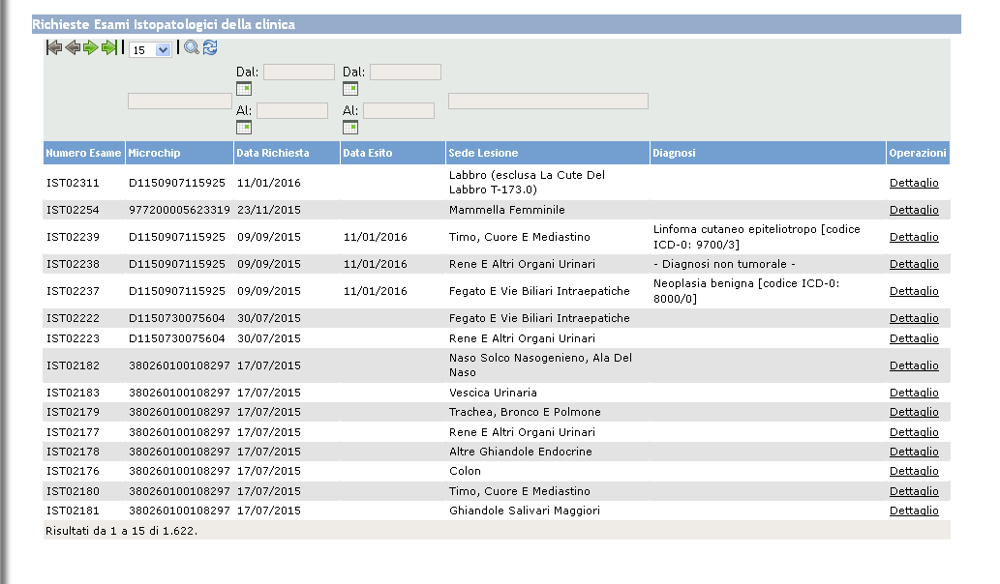
Esame citologico
Entrando nella gestione degli esami 'Esame Citologici' cliccando su 'Esami' → 'Esami Interni' → 'Citologico' viene mostrata la pagina con la lista degli esami come mostrato in figura.
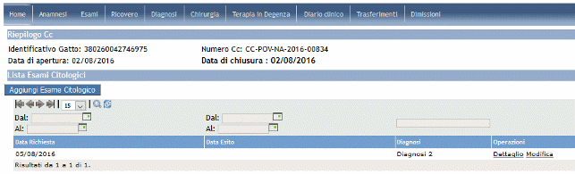
Cliccando sul pulsante 'Aggiungi Esame Citologico' è possibile inserire un nuovo esame compilando il modulo seguente
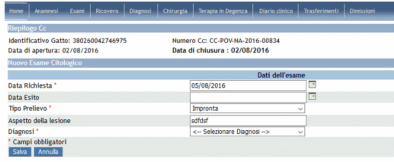
Cliccando sui tasti Modifica e Dettaglio posti nella lista si può, rispettivamente, modificare o visualizzare il dato inserito precedentemente.
Esami Esterni si dividono in:
Ehrlichiosi
Entrando nella gestione degli esami 'Ehrlichiosi' cliccando su 'Esami' → 'Esami Esterni' → 'Ehrlichiosi' viene mostrata la pagina con la lista degli esami come mostrato in figura.
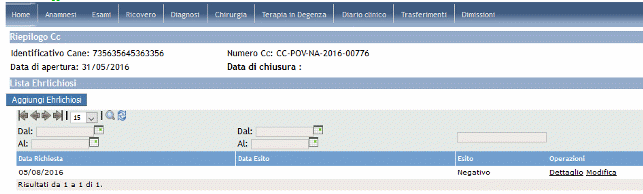
Cliccando sul pulsante 'Aggiungi Ehrlichiosi' è possibile inserire un nuovo esame compilando il modulo seguente
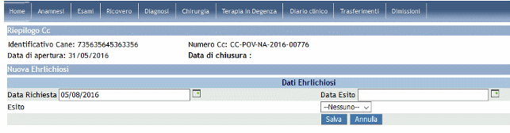
Cliccando sui tasti Modifica e Dettaglio posti nella lista si può, rispettivamente, modificare o visualizzare il dato inserito precedentemente.
Leishmaniosi
Entrando nella gestione degli esami 'Leishmaniosi' cliccando su 'Esami' → 'Esami Esterni' → 'Leishmaniosi' viene mostrata la pagina con la lista degli esami come mostrato in figura.
In particolare vengono mostrate tre liste:
Lista Leishmaniosi: lista esami caricati da Vam e non più inseribili in quanto da gennaio 2016 le richieste vanno inserite direttamente in Bdu (vedi lista Prelievo Campioni Leismania);
Prelievo Campioni Leishmania: lista di registrazioni Prelievo Leishmania inseriti in bdu (partendo da questa maschera);
Esiti Leishmaniosi importati da Sigla: la lista di registrazioni viene presa da bdu e corrisponde agli esiti sull'animale aventi data precedente alla chiusura della cc, se la cc è ancora aperta vengono presi tutti.
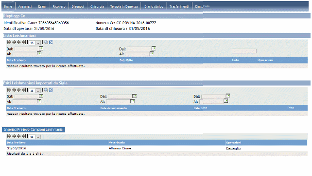
Cliccando sul pulsante 'Inserisci Prelievo Campioni Leishmania' è possibile inserire una nuova registrazione in Bdu tramite il modulo seguente:

Dopo aver compilato i dati ed aver cliccato su Salva si presenta la maschera di riepilogo seguente.
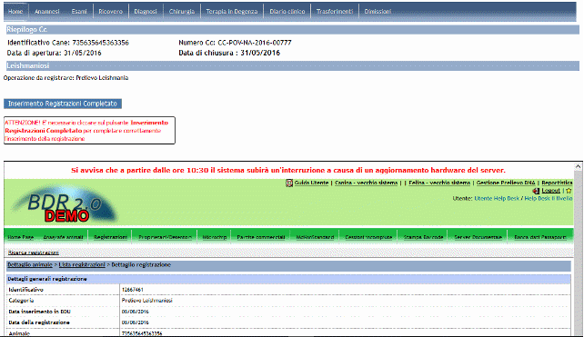
Cliccare su 'Inserimento Registrazioni Completato' per allineare Vam con la nuova registrazione Bdu.
Cliccando sul tasto Dettaglio posto nella lista si può visualizzare il dato inserito precedentemente.
Rickettsiosi
Entrando nella gestione degli esami 'Rickettsiosi' cliccando su 'Esami' → 'Esami Esterni' → 'Rickettsiosi' viene mostrata la pagina con la lista degli esami come mostrato in figura.
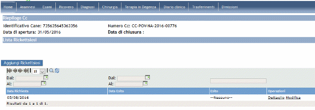
Cliccando sul pulsante 'Aggiungi Rickettsiosi' è possibile inserire un nuovo esame compilando il modulo seguente
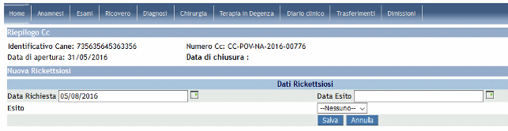
Cliccando sui tasti Modifica e Dettaglio posti nella lista si può, rispettivamente, modificare o visualizzare il dato inserito precedentemente.
Toxoplasmosi
Entrando nella gestione degli esami 'Toxoplasmosi' cliccando su 'Esami' → 'Esami Esterni' → 'Toxoplasmosi' viene mostrata la pagina con la lista degli esami come mostrato in figura.
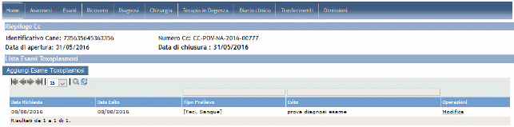
Cliccando sul pulsante 'Aggiungi Esame Toxoplasmosi' è possibile inserire un nuovo esame compilando il modulo seguente
Cliccando sul tasto Modifica posto nella lista si può modificare il dato inserito precedentemente.
Rabbia
Entrando nella gestione degli esami 'Rabbia' cliccando su 'Esami' → 'Esami Esterni' → 'Rabbia' viene mostrata la pagina con la lista degli esami come mostrato in figura.
Cliccando sul pulsante 'Aggiungi Esame Rabbia' è possibile inserire un nuovo esame compilando il modulo seguente
Cliccando sul tasto Modifica posto nella lista è possibile modificare il dato inserito precedentemente.
Felv
Entrando nella gestione degli esami 'Felv' cliccando su 'Esami' → 'Esami Esterni' → 'Felv' viene mostrata la pagina con la lista degli esami come mostrato in figura.
Cliccando sul pulsante 'Aggiungi Esame Felv' è possibile inserire un nuovo esame compilando il modulo seguente

Cliccando sul tasto Modifica posto nella lista si può modificare il dato inserito precedentemente.
Fiv
Entrando nella gestione degli esami 'Fiv' cliccando su 'Esami' → 'Esami Esterni' → 'Fiv' viene mostrata la pagina con la lista degli esami come mostrato in figura.
Clliccando sul pulsante 'Aggiungi Esame Fiv' è possibile inserire un nuovo esame compilando il modulo seguente

Cliccando sul tasto Modifica posto nella lista si può modificare il dato inserito precedentemente.
Fip
Entrando nella gestione degli esami 'Fip' cliccando su 'Esami' → 'Esami Esterni' → 'Fip' viene mostrata la pagina con la lista degli esami come mostrato in figura.
Cliccando sul pulsante 'Aggiungi Esame Fip' è possibile inserire un nuovo esame compilando il modulo seguente

Cliccando sul tasto Modifica posto nella lista si può modificare il dato inserito precedentemente.
2.4.3Gestione della fase Ricovero
Per la fase di ricovero è stata gestita una scheda di dettaglio in cui è possibile inserire una data del ricovero, scegliere la struttura di ricovero (box degenza, gabbia terapia intensiva, canile interno, canile esterno, gattile, voliera, tunnel in volo, quarantena), inserire il motivo del ricovero e la sintomatologia, come da figura seguente.

Figura 27 – Dettaglio del ricovero
2.4.4Diagnosi
La fase della diagnosi è stata suddivisa in varie fasi:
Diagnosi mediche
Diagnosi chirurgiche
Diagnosi infettive
Controllo periodico
Figura 28 - diagnosi
2.4.5Terapia in degenza
Come da figura seguente è possibile aggiungere una terapia in degenza:
Figura 29 – lista delle terapie in degenza
Visualizzando il dettaglio della terapia, è presente la Sezione Assegnazione Farmaco in cui sono presenti tutti i farmaci disponibili in magazzino con le relative quantità, inoltre tra le varie opzioni c’è la possibilità di assegnare un dato farmaco al degente.
Figura 30 – Dettagli terapia in degenza
2.4.6Diario Clinico
Nel diario clinico è presente tutta la lista degli esami eseguiti, il richiedente e la data della richiesta e dell’esito.
 Figura 31 – Lista esami del diario clinico
Figura 31 – Lista esami del diario clinico
2.4.7Trasferimenti
Tramite la funzionalità “Trasferimenti”, posto nel cavaliere cartella clinica, è possibile trasferire un animale ricoverato in un'altra clinica.
Per effettuare un trasferimento cliccare sul pulsante 'Nuova Richiesta in Urgenza' che mostra la maschera di inserimento come in figura.
N.B.: le richieste non in urgenza sono state disabilitate.
Figura 32 – Dati richiesta trasferimento
Inserire la data, almeno una motivazione la clinica di destinazione e cliccare 'Salva'.
Al click sul pulsante 'Salva' il sistema verifica che l'operazione sia:
effettuabile per animali deceduti. Le operazioni effettuabili sono Radiografie, TAC e Esame Necroscopico;
effettuabile per animali vivi: tutte le operazioni sul trasferimento sono possibili per animali vivi;
effettuabile da asl non intestataria dell'animale: nessuna delle operazioni sul trasferimento sono possibili per animali fuori asl;
non sia stato già registrato il trasporto spoglie per l'animale.
All'atto dell'inserimento il trasferimento si trova nello stato 'Attesa Clinica Destinazione', come si evince dalla figura seguente e la cc viene chiusa.
Cliccando sul link 'Dettaglio Trasferimento' si apre una popup dove si leggono i dettagli del trasferimento (vedi figura).

Cliccando sulla voce di menu 'Trasferimenti' è possibile monitorare i trasferimenti inviati alla o dalla clinica con la quale si sta lavorando. La pagina infatti propone due liste di trasferimenti: trasferimenti in uscita e trasferimenti in ingresso (vedi figura).
Su ogni trasferimento è possibile visualizzare il dettaglio tramite il link 'Dettaglio' e le cc coinvolte nelle varie fasi del trasferimenti tramite i link 'CC originale', 'Cc destinatario' e 'Cc post Riconsegna'.
L'operazione possibile sui trasferimenti in ingresso è 'Procedi con Accettazione': cliccando l'apposito pulsante si apre la pagina seguente.
Dopo aver compilato i dati, il trasferimento è stato accettato e genera un'accettazione nela clinica di destinazione e anche la cc associata. Da notare che nell'accettazione generata con questa modalità, alla voce Richiedente viene riportata la clinica di origine (vedi figura).
Nella cartella clinica aperta nella clinica di destinazione, dopo avere inserito tutti i dati del caso, è possibile riconsegnare l'animale alla clinica di origine andando nel cavaliere 'Trasferimenti' e cliccare sul pulsante 'Riconsegna' come evidenziato in figura.
Cliccando su 'Riconsegna' si apre il modulo come nella seguente figura. Compilare data e nota riconsegna e cliccare 'Salva'.
D
opo questa operazione il trasferimento si trova nello stato 'Riconsegnato', come si evince dalla figura seguente e la cc viene chiusa.
La riconsegna chiude la cc corrente e apre una nuova accettazione con cc associata nella clinica di origine. Nel dettaglio dell'accettazione si evince che è stata aperta dopo una riconsegna, come da figura.
2.4.8Dimissioni
Esiste inoltre la possibilità di gestione delle dimissioni di un degente da una clinica, da un canile ecc.. per svariate motivazioni come: ritorno al proprietario, decesso, adozione, trasferimento ad un canile, re-immissione.
Figura 33 – Registrazione dimissioni
2.4.9 Gestione Cartelle Cliniche -HELP DESK-
Nella maschera di dettaglio della cc è possibile, per gli utenti HELP DESK, eliminare tramite un bottone la cc.
Esistono però dei casi in cui non è possibile eliminare le cc.
1° CASO)
Nel caso di un animale che ha più cartelle cliniche aperte non è possibile cancellare le cartelle "centrali" (in ordine di tempo) ma solo l'ultima.Procedendo a ritroso è possibile cancellare tutte le cartelle cliniche.
Questo il messaggio di errore:

Esempio :
Animale con due cc:
1)degenza
2)necroscopica
E’ possibile eliminare la prima cc solo se si cancella la cc relativa alla necroscopia.
2° CASO)
Per un animale cancellare una cc inserita ma che risulta in sospeso in bdu come ad esempio una registrazione di decesso , comporta prima la cancellazione della registrazione in bdu e poi sarà possibile effettuare la cancellazione da vam della cc.
Questo il messaggio di errore:

3.Fascicolo Sanitario
La gestione dei fascicoli sanitari è semplice, l’utente visualizza soltanto i fascicoli appartenenti alla propria ASL ed i microchip interessati sono tutti quelli per i quali è stata aperta una cartella clinica oppure una cartella necroscopica.
Nella maschera iniziale per il fascicolo sanitario è presente una colonna in cui viene indicato il numero progressivo del fascicolo, una colonna che riporta la data apertura del fascicolo, la data chiusura e il microchip interessato come riportato di seguito:
Figura 34 – Fascicolo sanitario
Nel dettaglio un fascicolo sanitario troviamo i dati del fascicolo, i dati dell’animale, i dati del proprietario e l’elenco di tutte le cartelle cliniche presenti per un determinato microchip.
 Figura 35 – Dettaglio di un fascicolo
sanitario
Figura 35 – Dettaglio di un fascicolo
sanitario
4.Trasferimenti
I trasferimenti sono un argomento abbastanza delicato, per ogni ASL devono essere gestiti trasferimenti in Ingresso e trasferimenti in Uscita. Sono possibili trasferimenti anche fuori regione.
Nella maschera di VAM relativa ai trasferimenti troviamo l’elenco dei trasferimenti in ingresso e in uscita, è importante precisare che ogni utente può visualizzare esclusivamente i trasferimenti relativi alla propria asl di appartenenza.
Figura 36 – Trasferimenti ingresso/uscita
Per ogni richiesta di trasferimento è presente una scheda di dettaglio, nella quale sono indicati tutti i dettagli utili al trasferimento, ovvero l’identificativo animale, la motivazione della richiesta, la clinica di origine e la clinica di destinazione, ecc...
E’ possibile richiedere il trasferimento in fase di accettazione una volta che è stata aperta la Cartella Clinica oppure direttamente in Cartella Clinica.

Figura 37 – Dettaglio trasferimento
5.Registro Tumori
Tutti gli esiti di tipo tumorale che sono stati inseriti nelle modalità descritte nel paragrafo 2.4.2.1 vanno ad incrementare la lista ‘Registro Tumori’ accessibile dall’omonimo link posto nel menu a sinistra(fig.38).
Figura 38 – Registro tumori
Cliccando su ‘Dettaglio’ è possibile visualizzare maggiori informazioni(fig.39).
Figura 39 – Dettaglio Esame Istopatologico
Nella pagina di dettaglio è possibile:
cliccare sul pulsante 'Immagini Istopatologico' per visualizzare le immagini inserite nell'esito dell'istopatologico;
cliccare sul pulsante 'Necroscopia/Vedi CC' per visualizzare la necroscopia inserita nella cartella clinica associata all'esame istopatologico o, se non esiste, il riepilogo di tutta la cc.
6.Agenda
In agenda è possibile prenotare, all’interno della/e cliniche di competenza di un dato utente, un ambulatorio o una sala operatoria.
Figura 40 - Agenda
7.Gestione magazzino
La funzionalità “Gestione Magazzino” è stata introdotta al fine di monitorare il carico/scarico di Farmaci, Mangimi e Articoli Sanitari.
Figura 41 – Dettaglio Magazzino Farmaci

Figura 42 – Dettaglio Magazzino Mangimi

Figura 43 - Dettaglio Magazzino Articoli Sanitari
8.L’anagrafe Sinantropi
In fase di inserimento nuova accettazione, è possibile anagrafare :
Cani/gatti
Sinantropi
Animale marino
Animale dello zoo
Inseriti i dati correttamente nella scheda, basta cliccare sul pulsante “Operazione completata”.
Come mostrato in figura:
Dall’immagine in basso possiamo vedere quali sono le motivazioni/operazioni richieste
da inserire per i Sinantropi/Marini/Provenienti dallo zoo.
Una volta selezionate le motivazioni clicchiamo su Salva.

All’interno dell’anagrafe Sinantropi, come è possibile notare anche dall’immagine in basso è possibile:
Anagrafare specie quali Sinantropi/Marini/Provenienti da zoo;
Visualizzare la Lista dei Sinantropi/Marini/Provenienti da zoo in BDR;
Ricercare un Sinantropi/Marini/Provenienti da zoo a partire dal codice del sistema o dalla numerazione ufficiale dell’istituto faunistico;
E’ possibile effettuare:
Ricerca - divisa rispettivamente per Sinantropi/Marini/Provenienti da zoo;
Inserimento - divisa rispettivamente per Sinantropi/Marini/Provenienti da zoo;
Lista - divisa rispettivamente per Sinantropi/Marini/Provenienti da zoo;
In fase di inserimento si seleziona la Classe dell’animale da anagrafare e successivamente si aprirà la lista “famiglia e genere” nel quale è possibile selezionare la specie.
Nella scheda di inserimento nuovo Sinantropo è possibile inserire classe e sottospecie
-Per quanto riguarda le Specie marine nella provincia di rinvenimento sono state eliminate, per ovvi motivi, Benevento ed Avellino.
-Per gli animali provenienti dallo zoo, invece, non è possibile inserire le “informazioni rinvenimento” e la sezione “Detenzione” è sostituita con “Zoo di provenienza”.
Una volta entrati nel dettaglio di un sinantropo è possibile gestire rinvenimenti,detenzioni e rilasci, come mostrato nella figura sottostante.
Inoltre è possibile inserire da VAM un animale deceduto senza identificativo specificando come tipologia e relativa sottotipologia una delle classi: Sinantropo/Marino/Proveniente dallo zoo con la possibilità di non specificare il sesso dell’animale.
9.L’HelpDesk a supporto degli utenti
A supporto degli utenti è disponibile un sistema di HelpDesk, per permettere agli stessi di sollevare problematiche durante l’utilizzo del sistema come:
Errori durante l’utilizzo del sistema;
Mancanza di dati clinici;
Dati clinici errati;
Miglioramenti vari.
In particolare, cliccando sulla voce “HelpDesk”>”Nuova segnalazione” verrà presentata una schermata come nella figura sottostante.
A questo punto l’utente può compilare la scheda inserendo:
La tipologia dell’anomalia riscontrata;
Una breve descrizione della stessa;
Un eventuale indirizzo e-mail, in caso desideri ricevere una risposta a seguito della presa in carico del problema da parte degli amministratori del sistema.
APPENDICE A: Credenziali di accesso ai sistemi
|
Sistema |
URL |
|
VAM |
http://vam.anagrafecaninacampania.it/ |
|
Anagrafe Sinantropi |
http://sinantropi.anagrafecaninacampania.it/ |
Le credenziali di accesso generiche sono le seguenti (quelle private son state inviate via e-mail):
Username: test_vam
Password: 123456.q
Ci sono alcuni cani già registrati e riconosciuti all’interno del sistema, su cui è possibile effettuare le prove di utilizzo del sistema senza passare per la registrazione/anagrafica in BDR:
111111111111111
222222222222222
Va ricordato agli utenti che le operazioni sulla BDR vengono effettuate su un ambiante di test (canina_demo) e perciò, eventuali operazioni effettuare sulla stessa, saranno salvate nell’ambiente di test e non sulla versione ufficiale.